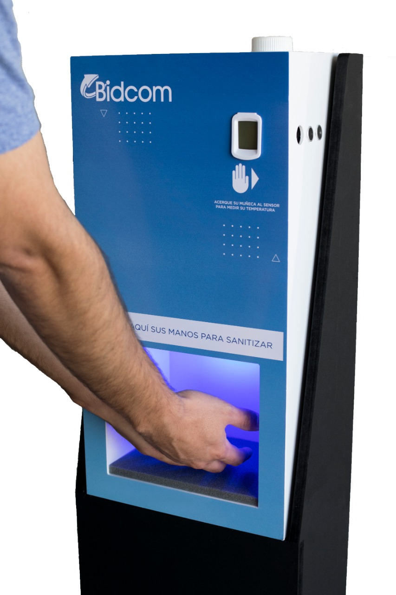

¿Cómo funciona el producto?
Se introducen las manos dentro de la cabina, y automáticamente mediante sensor de movimiento, se activara el pulverizador y rociará sus manos con liquido sanitizante. Para tomarse la temperatura, deberá acercar su muñeca al lateral derecho del equipo, automáticamente se activara el termómetro, tomara su temperatura y la indicara en la pantalla frontal para que el usuario pueda verla.
